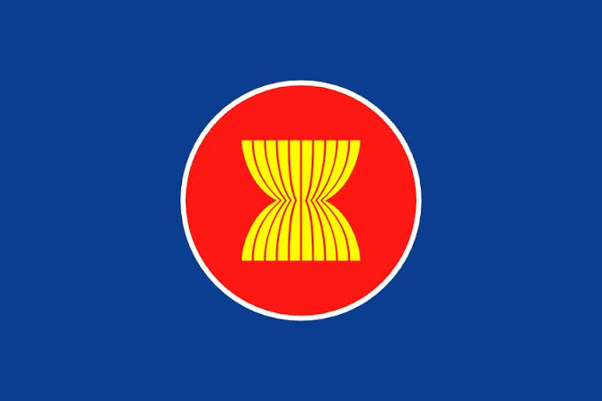

Perhimpunan Bangsa-Bangsa Asia Tenggara atau lebih dikenal sebagai ASEAN adalah organisasi geopolitik dan ekonomi untuk negara-negara di kawasan Asia Tenggara, yang didirikan di Bangkok, Thailand pada tanggal 8 Agustus 1967 berdasarkan Deklarasi ASEAN oleh Indonesia, Malaysia, Filipina, Singapura, dan Thailand. 